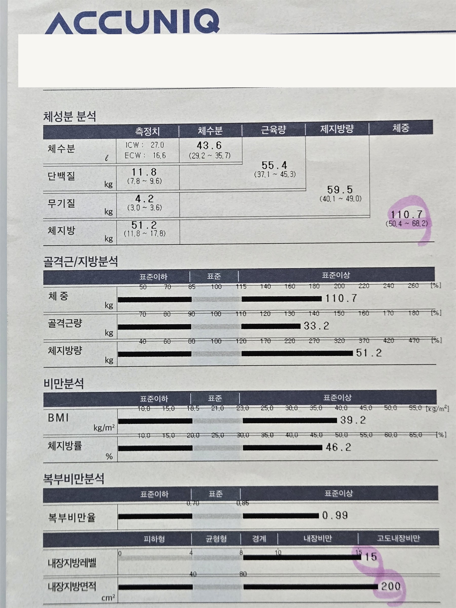
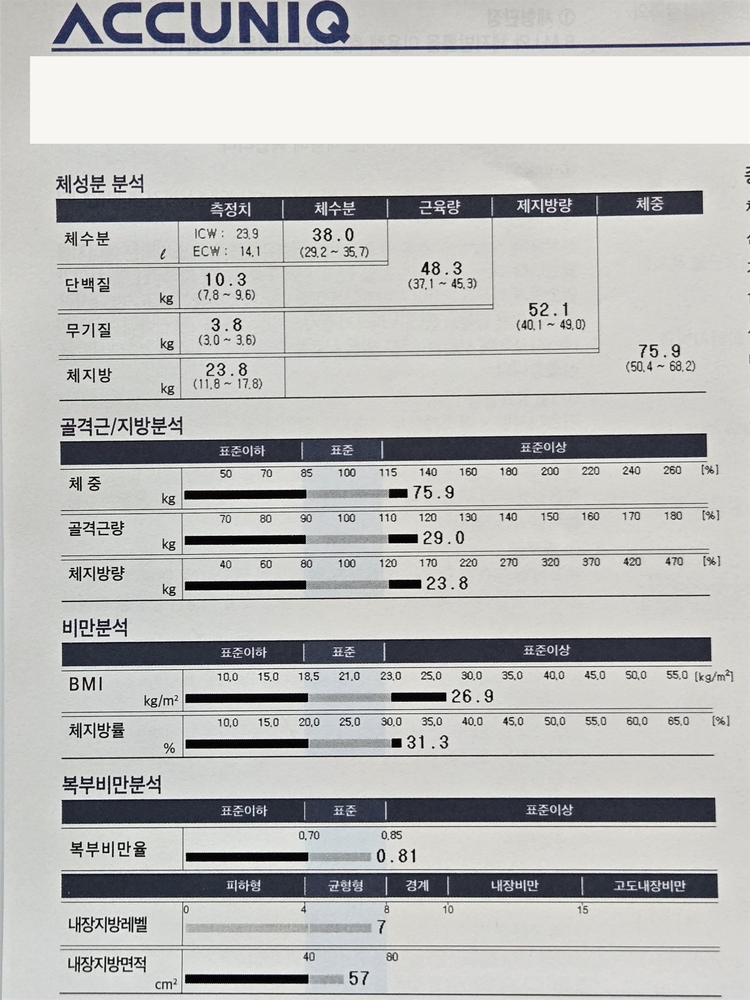

01
食欲
为什么一到晚上食欲就格外旺盛？
会一并了解进餐间隔、饥饿感变强的时段，以及反复吃夜宵或暴食的情况。不把食欲只看作意志问题，而是放在一天的进食节奏与生活规律中来看。
DEAR DIET PROGRAM
从食欲与睡眠、消化与浮肿，到排便与生活节奏。
综合了解当下状态，再确定肥胖诊疗方向。
江南站与教大站之间 · 首尔瑞草洞DEAR韩医院
了解BE DEER的诊疗 ↓A DIFFERENT BEGINNING
在断定是意志不足之前，
不妨先停一停。
当下的身体与生活，
值得先好好看一看。
即便体重相同，难以改变的原因
和能坚持下去的方法也因人而异。
WHAT WE OBSERVE
为什么一到晚上食欲就格外旺盛？
会一并了解进餐间隔、饥饿感变强的时段，以及反复吃夜宵或暴食的情况。不把食欲只看作意志问题，而是放在一天的进食节奏与生活规律中来看。
睡够了，却还是觉得累？
不只询问总睡眠时长，也会了解入睡所需时间、夜间醒来情况、起床后的恢复感以及白天的精神状态。必要时参考自主神经功能相关的测量资料，一并评估睡眠与恢复。
有没有吃一点就觉得胀的时候？
会了解餐后腹胀或不适在什么时候出现，吃哪些食物、吃多少时会反复发生。不单看食欲与摄入量，也会一并确认消化状态和进餐模式。
早上和晚上，浮肿的感觉不一样吗？
会一并了解面部或手脚在哪些时段浮肿、是否反复出现，以及日常生活中能感觉到的变化。不会只凭体重秤上的数字判断当下状态。必要时会参考体成分与体水分相关的测量资料，但也不会仅凭单一测量值判定浮肿的原因。
上厕所的规律常常变化吗？
不只看排便次数，也会了解与平时不同的情况、排便时的不适，以及餐前餐后的变化。排便状态同样会与饮食、睡眠、生活节奏放在一起评估。
睡得越来越晚、饭点一拖再拖，身体是不是也跟着垮了？
身体记住的不是时钟，而是重复。晚睡、错过正餐、晚上一次吃太多，再加上几乎不动的一天天累积下来，食欲与消化就会紊乱，疲劳也容易堆积。诊疗中不会笼统地说“请规律生活”，而是找出您的一天里最先乱掉的时段，以及可以重新调整的那一个点。

WHY I MADE BE DEER
多年来，我一直在学习如何让身体动起来，
也深知吃的乐趣
能给生活带来多少慰藉。
您或许也有体会，
总要放弃自己喜欢的东西的减重，
很难长久坚持下去。
与其一味压抑忍耐，
我更想和您一起，找到在了解身体的同时
能够持续改变的方法。
THE BE DEER FLOW
了解目前的困扰与体重变化，
以及以往的肥胖治疗经历。
食欲、睡眠、消化、排便、浮肿，
连同生活模式一并问诊。
结合问诊内容，综合查看当下的身体状态。
体成分等基础测量结果，以及必要时的补充测量资料，都会作为诊疗判断的参考。
根据已确认的内容，确定符合当前状态的诊疗方向。
包括韩药在内的治疗方案，会在诊察后因人而定。
不只记录体重变化。
也会重新确认食欲、睡眠、消化、身体状态和生活上的变化，并反映到后续诊疗中。
MEASURED CHANGE
同一位患者从开始到现在，我们不只看体重，而是结合体成分的变化来解读。

放大查看报告开始治疗时，体重、体脂肪量与腹部脂肪指标均处于较高范围。为避免之后只凭体重判断变化，同时记录了包括骨骼肌量在内的体成分。

放大查看报告体重、体脂肪与腹部脂肪指标同时下降，骨骼肌量也发生了变化。为了准确解读当前结果并制定维持计划，我们会同时确认下降的数值与需要补强的部分。
本案例
在体重、体脂肪及腹部脂肪指标偏高的状态下开始治疗，
之后体脂肪与内脏脂肪指标一同下降。
REAL RECEIPT REVIEWS
以下是本院NAVER Place上的真实评价。

“有时能感觉到，院长对运动的话题是真心在回应。”
学习过运动处方、肌肉学、瑜伽与普拉提的韩医师，也会一并评估身体的活动。

“每次去都会仔细检查我的身体状态。”
不会一味按既定方案推进，而是通过诊疗确认当下状态与变化。

“遇到困难的时候也会给我建议，所以一直坚持来。”
让您不仅能谈身体的变化，也能自在地说出实际生活中卡住的时刻。

“对待患者时能感受到真心，让人信赖。”
我们认为，诊室里的说明与态度，也是和患者一起完成诊疗过程的一部分。
从评价看BE DEER减重诊疗
评价中的这些变化，并不是少数特别之人的故事，
大多始于饮食、睡眠与生活节奏被打乱的日常。

短期体重不仅受体脂肪影响，也受体水分、糖原与排便状态左右。我们会结合近期的体重走势、体成分、实际摄入量与活动量， 区分这是暂时波动还是减重停滞。
减重之后，可能出现 能量消耗降低、食欲上升的生理性代偿反应。我们会确认此前减重的速度与方式、肌肉量与进餐模式的变化，区分导致体重回升的因素，并一并制定维持计划。
反复出现的夜宵与零食， 并不能仅以意志来解释。 我们会确认长时间空腹、进餐过晚、睡眠不足、压力以及随月经周期变化的食欲，找出饥饿感变强的时段与反复出现的诱因。
体脂肪增加与体液变化，即便在体重上看起来一样，也是两回事。 我们会确认浮肿的部位与时段、消化与排便状态、体成分与体水分资料，将体重变化与随之而来的不适分开评估。
总能量消耗中，除运动之外， 通勤、工作、家务等非运动性活动也占一部分。 确认睡眠与恢复状态、日常活动量与进餐环境后，确定当前状态所需的诊疗范围与优先顺序。
仅凭体重或BMI，难以充分评估代谢疾病的风险。 综合腹部脂肪与体成分、血压、血糖与血脂相关检查结果、家族史及正在服用的药物，共同确定减重目标与代谢风险评估的优先顺序。

信息越多越杂，越值得一起确认什么才是适合您的健康方法。
BE DEER CLINICAL JOURNAL
由金敏智代表院长亲自撰写、经医学审阅后最终确认的肥胖与代谢专栏。
BEGIN WITH BE DEER
BE DEER并不只看体重，
而是综合了解当下的身体与生活，再确定诊疗方向。
BE DEER减重诊疗 · 由金敏智代表院长接诊